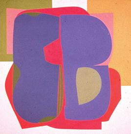

Memorial to Doug Morton |
|
|
Unfortunately, Douglas Morton has passed away.
(source)
He was well known as a member of the Regina Five, whom are reputed as the group that introduced prarie art to the nation. (Regina Five pictured to the right, with Douglas Morton standing to the far right. Also pictured is Doug morton alone, sketching) Doug Morton has had an eclectic career as an academic art administrator, businessman, curator, and artist. He worked as a commercial artist in 1946, was curator of the Calgary Allied Arts Centre (1951-53), and was vice-president and manager of MacKay-Morton Ltd in Regina (1954-67). During all this time, Morton remained an active member of the arts community. [Source] His practical business sense was in sharp contrast to his adventurous and experimental approach to painting. Morton was keen on using bold colour and large canvasses; he was also a pioneer in the technique of attaching objects-a piece of Styrofoam or wood, for example-to the work in order to extend the image. [Source] Morton's work was not as popularly received as those of fellow exhibitors Ron Bloor, Art McKay, Ken Lochhead, and Ted Godwin, after their 1961 breakthrough in Ottawa. Other artists, who were aware of his exceptional eye for detail, did appreciate his painting and considered his reputation to be underrated. [Source] |
  |
Some of his works: |
|
 |
This painting is called "Barge Canal, London, England" by Doug Morton. (taken from http://scaa.sk.ca/gallery/art/artists-morton.html) |
|  | This piece is called "2 plus 2" by Doug Morton. (taken from http://esask.uregina.ca/entry/morton_doug_1926-2004.html) |
 |
This piece is called "Fractured Black" by Doug
Morton (taken from http://scaa.sk.ca/gallery/art/artists-morton.html) |
 |
Information for these paintings is undisclosed, however they were painted by Doug Morton. |
 |
|